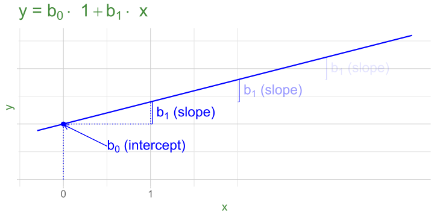
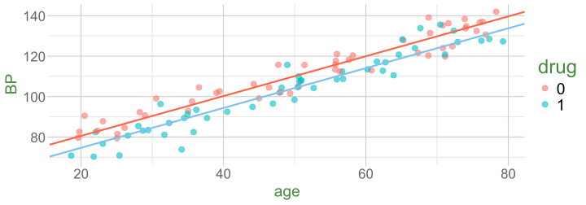
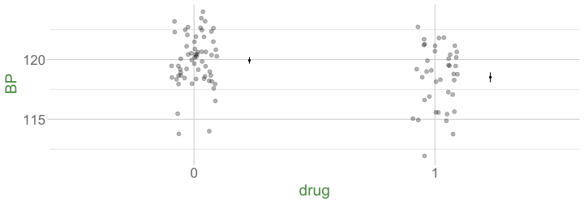
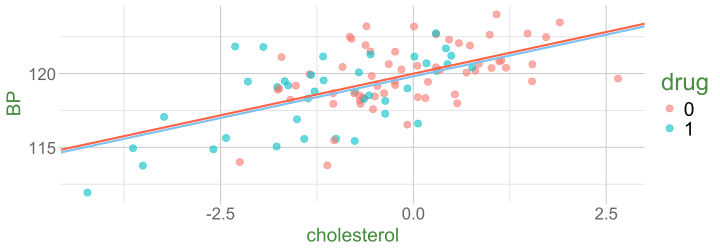
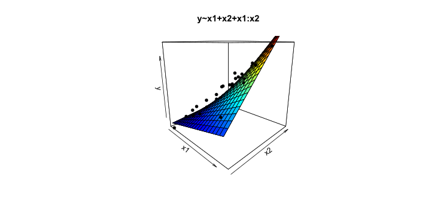

Regression Refresh
Data Analysis for Psychology in R 3
Multiple Regression
More than one predictor?
\(\color{red}{y} = \color{blue}{b_0 \cdot{} 1 + b_1 \cdot{} x_1 + \, ... \, + b_k \cdot x_k} + \varepsilon\)

Third variables

Third variables (2)
- X and Y are ‘orthogonal’ (perfectly uncorrelated)

Third variables (4)
- X and Y are correlated.
- a = portion of Y’s variance shared with X
- e = portion of Y’s variance unrelated to X
- Z is also related to Y (c)
- Z is orthogonal to X (no overlap)
- relation between X and Y is unaffected (a)
- unexplained variance in Y (e) is reduced, so a:e ratio is greater.
Design is so important! If possible, we could design it so that X and Z are orthogonal (in the long run) by e.g., randomisation.

Third variables (5)
- X and Y are correlated.
- Z is also related to Y (c + b)
- Z is related to X (b + d)
Association between X and Y is changed if we adjust for Z (a is smaller than previous slide), because there is a bit (b) that could be attributed to Z instead.
- multiple regression coefficients for X and Z are like areas a and c (scaled to be in terms of ‘per unit change in the predictor’)
- total variance explained by both X and Z is a+b+c

simple lm(y~x)

what do i do with Z?

Z is… a confounder

Z is… a mediator

example

example - observational study


example - randomised trial


example - post-treatment variables



example 2 - colliders


- to play around with this, see https://colliderbias.herokuapp.com/
Multiple Regression
mod1 = lm(BP ~ age + drug, mydata)
summary(mod1)
Call:
lm(formula = BP ~ age + drug, data = mydata)
Residuals:
Min 1Q Median 3Q Max
-14.616 -3.325 0.824 3.709 11.714
Coefficients:
Estimate Std. Error t value Pr(>|t|)
(Intercept) 62.5566 1.5383 40.7 < 2e-16 ***
age 0.9154 0.0334 27.4 < 2e-16 ***
drugYes -6.7654 1.1661 -5.8 8.2e-08 ***
---
Signif. codes: 0 '***' 0.001 '**' 0.01 '*' 0.05 '.' 0.1 ' ' 1
Residual standard error: 4.95 on 97 degrees of freedom
Multiple R-squared: 0.898, Adjusted R-squared: 0.896
F-statistic: 427 on 2 and 97 DF, p-value: <2e-16| term | est | interpretation |
|---|---|---|
| (Intercept) | 62.56 | estimated BP when all predictors are zero (age 0, drug = no) |
| age | 0.92 | estimated change in BP when age increases by 1, and drug is held constant |
| drugYes | -6.77 | estimated change in BP between drug = no and drug = yes, holding age constant |
Interactions (3)

summary(lm(y ~ x1 + x2, data = df))Coefficients:
Estimate Std. Error t value Pr(>|t|)
(Intercept) -4.009 2.008 -2.00 0.052 .
x1 4.345 0.329 13.22 < 2e-16 ***
x2 3.189 0.402 7.93 3.2e-10 ***
summary(lm(y ~ x1 + x2 + x1:x2, data = df))Coefficients:
Estimate Std. Error t value Pr(>|t|)
(Intercept) 6.004 2.652 2.26 0.028 *
x1 1.347 0.677 1.99 0.053 .
x2 0.561 0.637 0.88 0.383
x1:x2 0.763 0.158 4.83 0.000016 ***What is inference?

Null Hypothesis Testing

Null Hypothesis Testing (2)

test of individual parameters

test of individual parameters (2)

test of individual parameters (3)

test of individual parameters (4)

Sums of Squares (2)
- \(SS_{total} = \sum^{n}_{i=1}(y_i - \bar y)^2\)
- a+b+c+e
- \(SS_{model} = \sum^{n}_{i=1}(\hat y_i - \bar y)^2\)
- a+b+c
- \(SS_{residual} = \sum^{n}_{i=1}(y_i - \hat y_i)^2\)
- e
\(R^2\)
\(R^2 = \frac{SS_{Model}}{SS_{Total}} = 1 - \frac{SS_{Residual}}{SS_{Total}}\)
mdl <- lm(y ~ 1 + z + x)
summary(mdl)...
Coefficients:
Estimate Std. Error t value Pr(>|t|)
(Intercept) ... ... ... ...
z ... ... ... ...
x ... ... ... ...
...
...
Multiple R-squared: 0.134, Adjusted R-squared: 0.116
...
tests of multiple parameters
Model comparisons:
m1 <- lm(y ~ 1 + x, data = df)
m2 <- lm(y ~ 1 + z + z2 + x, data = df)
tests of multiple parameters (3)
Test everything in the model all at once by comparing it to a ‘null model’ with no predictors:
m0 <- lm(y ~ 1, data = df)
m2 <- lm(y ~ 1 + z2 + z + x, data = df)
anova(m0,m2)Analysis of Variance Table
Model 1: y ~ 1
Model 2: y ~ 1 + z2 + z + x
Res.Df RSS Df Sum of Sq F Pr(>F)
1 99 1232
2 96 357 3 875 78.6 <2e-16 ***
---
Signif. codes: 0 '***' 0.001 '**' 0.01 '*' 0.05 '.' 0.1 ' ' 1
The broader idea (2)
All our work here is in aim of making models of the world (models of how we think the data are generated).
In an ideal world, our model accounts for all the systematic relationships. The leftovers (our residuals) are just random noise.
If our model is mis-specified then our residuals may reflect this.
We check by examining how much “like randomness” the residuals appear to be
We will never know whether our residuals contain only randomness - we can never observe everything!

assumptions (3)
What does randomness look like?
“zero mean and constant variance iid”
mean of the residuals = zero across the predicted values of the model.
spread of residuals is normally distributed and constant across the predicted values of the model.

Common study designs

This week
Tasks
 Complete readings
Complete readings
 Attend your lab and work together on the exercises
Attend your lab and work together on the exercises
 Complete the weekly quiz
Complete the weekly quiz
Support
 Piazza forum!
Piazza forum!
 Office hours (see Learn page for details)
Office hours (see Learn page for details)